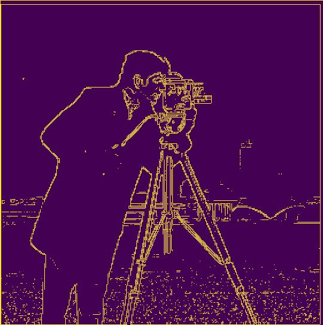

First, the cameraman image is convolved with Dx = [[1, -1]] and Dy = [[1], [-1]] respectively. Then, combine the Dx and Dy images by using
np.sqrt(dx_deriv ** 2 + dy_deriv ** 2), the result is called image gradient. Finally, binarized the image by setting the pixel value to 1 if it's above the threshold and 0 otherwise.
Results
Dx
Dy
Image Gradient
combines Dx and Dy

Image Gradient Binarized
2.2 Derivative of Gaussian (DoG) Filter
Method 1: First, apply the Gaussian filter to the image to get a blurred image. Then apply the same Dx, Dy, gradient computation and binarization
as in the previous section. The resulting edge image looks smoother and better better than the ones in section 1.1.
Method 2: Convolve Gaussian filter with Dx and Dy first, then apply the DoG (Derivative of Gaussian) to the original image.
After gradient computation and binarization, the result looks the same as the one in Method 1.
DoG Image Method 1
Convolve Guassian filter with Dx and Dy, then apply
the convolved filter onto the image
DoG Image Method 2
Apply the Gaussian filter to the image first, then convolve the filtered
image with Dx and Dy respectively.
Results
The results are shown as below with the displacement vectors (dx, dy) for the red and green plates. For these .tif images, the runtime of image pyramid algorithm
is in the range of 15-20s.
church.jpg
red:(-4, 59), green:(3, 25)
emir.jpg
red:(44, 36), green:(24, 49)
harvesters.jpg
red:(13, 123), green:(16, 59)
icon.jpg
red:(23, 89), green:(17, 41)
lady.jpg
red:(11, 116), green:(8, 56)
melons.jpg
red:(12, 178), green:(9, 82)
onion_church.jpg
red:(36, 108), green:(26, 51)
sculpture.jpg
red:(-26, 139), green:(-11, 33)
self_portrait.jpg
red:(36, 176), green:(29, 79)
three_generations.jpg
red:(10, 111), green:(13, 53)
train.jpg
red:(32, 87), green:(5, 42)
Bells and Whistles
In the results above, emir.jpg is not aligned properly. This is probably due to that the pixels on the same locations have very different intensity values on red, green and blue
plates. A possible solution is to use the edge feature for alignment instead of pixel values. I used Canny Edge detection algorithm, and this fixed the misalignment
problem. In the results below, the left image does not use Canny Edge detection, whereas the image on the right uses Canny Edge detection.